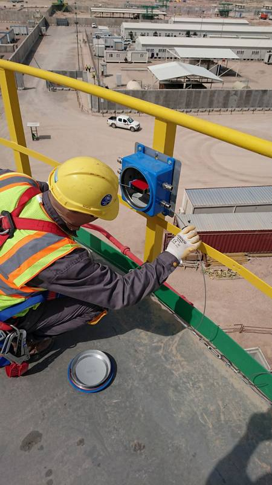

One team for the whole system: design, panels, field devices, programming, graphics, testing and handover.

TAG · BMS-01
Building management (BMS)
Desigo CC management station with PXC4 / PXC5 controllers for HVAC, chillers, AHUs, pumps and energy metering, with BACnet and Modbus integration of third-party plant.
Desigo CCPXC4 / PXC5BACnet · Modbus
TAG · FAS-02
Fire alarm & evacuation
Addressable fire detection, alarm and voice evacuation on Siemens Cerberus PRO and Cerberus FIT, with cause-and-effect programming and interfaces to lifts, dampers and HVAC.
Cerberus PROCerberus FITVoice evacuation
TAG · FGS-03
Fire & gas for plants
Flame, heat, smoke and gas detection for power stations, tank farms and refineries, integrated with plant control and shutdown systems.
Hazardous areasF&G panelsPlant integration
TAG · KNX-04
Lighting & room control
KNX lighting, blinds and room control, with touch panels and links to the BMS for schedules and occupancy.
KNXTouch panelsScheduling
TAG · INT-05
Integration on one platform
BMS, fire alarm, lighting and security brought together on one Desigo CC operator station, so operators see and act on everything from one screen.
Single operator stationAlarm management
TAG · SRV-06
Testing, training & support
Point-to-point testing, wet-to-dry commissioning, vendor site supervision, operator training, maintenance and upgrades of existing systems.
CommissioningTrainingMaintenance